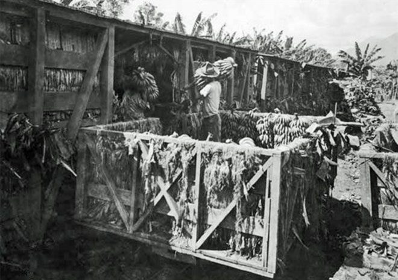
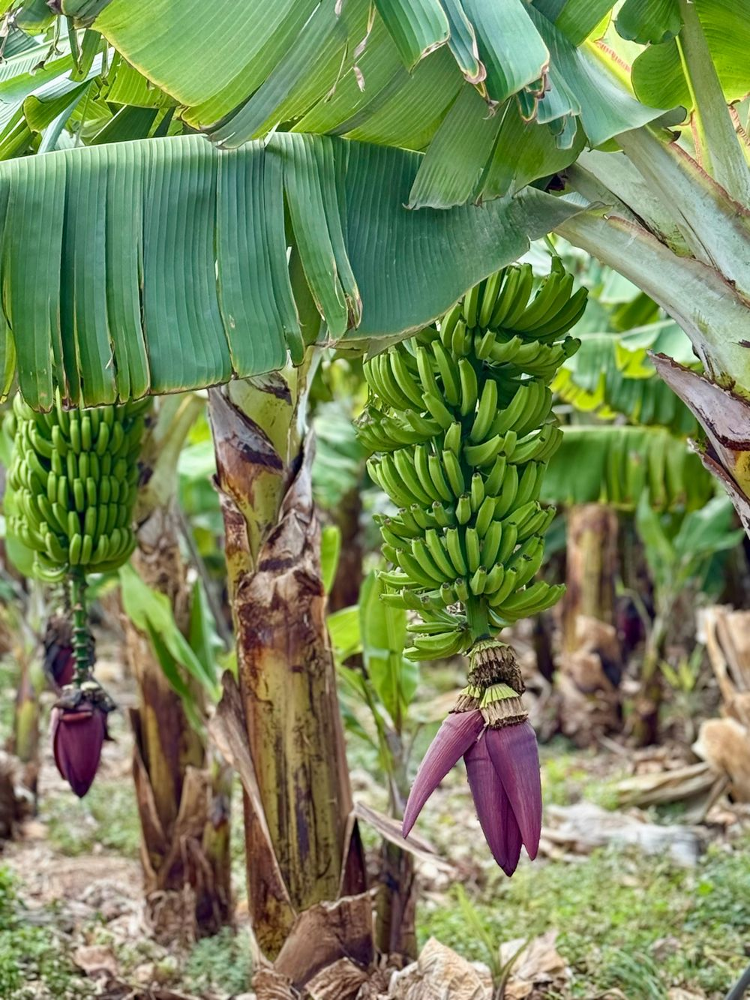

The Growth of the Banana Industry in Southern Belize, 1970–2000
For most of the 1800s, British Honduras (it became a colony in 1862) depended on mahogany logging. Sugar plantations in the south, worked by Chinese and Indian indentured labourers, mostly failed. Garifuna settlers had founded Stann Creek Town (now Dangriga) in the 1820s.
The first banana boom began in the late 1800s. Companies such as the Manatee Fruit Co., British Honduras Fruit Co. and Belize Fruit Co. planted along the Mullins and Manatee Rivers, and the Walize Fruit Co. at Monkey River. The British Honduras Syndicate combined farms into a 14,301-acre estate near Stann Creek Town and, in 1892, built a mule tramway to the pier to ship bananas to Mobile, Alabama. In 1909 the United Fruit Company took an option on 7,538 acres and the government built the Stann Creek Railway.
Then disaster struck. Panama disease, a soil fungus that kills banana plants, was found in 1916, and by about 1937 the first industry was dead. Citrus took over the Stann Creek Valley. A 1947 revival with Robusta bananas was hit by nematodes, and new firms in the 1960s tried again with disease-resistant varieties. By 1970 southern Belize still had few roads and little steady wage work; most families lived by small farming and fishing.

The key events of our period, with two events just after 2000 that show where these changes led.
Between 1970 and 2000 the industry settled in southern Stann Creek and northern Toledo, far south of the first farms near Dangriga.
Simplified map drawn from approximate coordinates, for orientation only.
The trade built between 1970 and 2000 still points to Europe. Banana export earnings by destination, 2022 (US$ millions):
Source: Observatory of Economic Complexity. Total 2022: US$41.7M. In 2023 bananas earned US$42.2M, Belize's 2nd biggest export.

Stann Creek and Toledo came to depend almost completely on bananas. Each risk below actually happened.
Hurricanes in 1975 and 1978 wiped out plantations. In 2001 Hurricane Iris levelled every banana farm in the south in under two hours; only a couple of farms were insured, and growers estimated up to US$57 million in lost revenue.
Panama disease destroyed the first banana industry. Today a new strain, Fusarium TR4, threatens the Cavendish bananas Belize grows, and Belize is testing Taiwan's resistant Formosana banana.
Prices set in Europe decided what Belize earned. As protected prices under the Lomé Convention weakened, Belize had to compete with much larger, cheaper producers.
Most of the crop goes to Fyffes. When Fyffes stopped buying from Meridian Enterprises in 2015, thousands of Belizeans lost work.
We rated each source for how reliable and useful it was. Primary sources are records from the time or official data; secondary sources interpret the past.
Primary source video: Banana production in Belize (YouTube)
We asked: how did the growth of banana farming change the economy and daily life for people in southern Belize between 1970 and 2000?
The evidence supports our thesis. Banana farming brought jobs, foreign income, better roads and the Port of Big Creek, and turned villages like Independence and Bella Vista into busy communities. Daily life shifted from small farming and fishing to wage work, and new migrant communities settled in the south. But the region came to depend on a single crop: hurricanes, disease and decisions made overseas could wipe out income almost overnight, as Hurricane Iris showed in 2001.